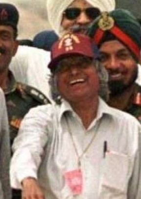

Early Life And Education
Avul Pakir Jainulabdeen Abdul Kalam was born on 15 October 1931 to a Tamil Muslim family in the pilgrimage centre of Rameswaram on Pamban Island, then in the Madras Presidency and now in the State of Tamil Nadu. His father Jainulabdeen was a boat owner and imam of a local mosque; his mother Ashiamma was a housewife. His father owned a ferry that took Hindu pilgrims back and forth between Rameswaram and the now uninhabited Dhanushkodi. By his early childhood, Kalam's family had become poor; at an early age, he sold newspapers to supplement his family's income.
In his school years, Kalam had average grades but was described as a bright and hardworking student who had a strong desire to learn. He spent hours on his studies, especially mathematics.After completing his education at the Schwartz Higher Secondary School, Ramanathapuram, Kalam went on to attend Saint Joseph's College, Tiruchirappalli, then affiliated with the University of Madras, from where he graduated in physics in 1954.
He moved to Madras in 1955 to study aerospace engineering in Madras Institute of Technology.While Kalam was working on a senior class project, the Dean was dissatisfied with his lack of progress and threatened to revoke his scholarship unless the project was finished within the next three days. Kalam met the deadline, impressing the Dean, who later said to him, "I was putting you under stress and asking you to meet a difficult deadline". He narrowly missed achieving his dream of becoming a fighter pilot, as he placed ninth in qualifiers, and only eight positions were available in the IAF.
Achievements
Dr Kalam's had put in over 10-year-long hard work as the project director for the development of the indigenous Satellite Launch Vehicle at ISRO that ultimately resulted in one of the greatest scientific development of indigenous Satellite Launch Vehicle (SLV). [Read more here]
On May 11, 1998, Kalam and the team successfully carried out the test firing and hoodwinked the western surveillance over Pokhran, issued to monitor India’s nuclear activities after the 1974 successful Pokhran-I codenamed ‘Operation Smiling Buddha’. [Read more here]

The duo of Kalam and Soma Raju in 2012 designed a rugged tablet computer for better health care administration in the rural and less reachable areas. They termed it the 'Kalam-Raju tablet.' [Read more here]
Kalam also headed the projects Devil and Valiant which had the aim of developing ballistic missiles using the technology behind the successful SLV program. Under mission Kalam with other projects, members developed many missiles including AGNI which is an intermediate-range ballistic missile and PRITHVI which is a surface-to-surface missile. [Read more here]

Books

In this ground-breaking vision document, first published in 1998, Dr A.P.J. Abdul Kalam and Y.S. Rajan offer a blueprint for India to be counted among the world’s top...
[Buy from Amazon]
Dr. Kalam is one of India's most distinguished scientists. As Chairman of the Technology Information, Forecasting and Assessment Council, he guided ...
[Buy from Amazon]
Avul Pakir Jainulabdeen Abdul Kalam, the son of a little-educated boat-owner in Rameswaram, Tamil Nadu, had unparalleled career as defence scientist in the...
[Buy from Amazon]